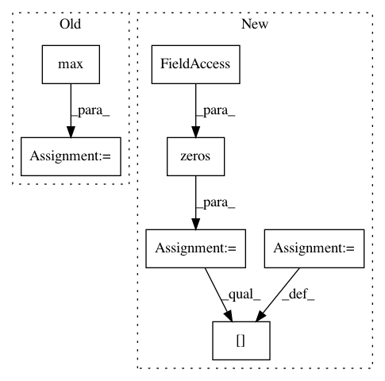

f3e6f09e2a915766454b6ab2a9b0e4cf73d4572e,cellprofiler/modules/identifytertiaryobjects.py,IdentifyTertiaryObjects,run,#IdentifyTertiaryObjects#Any#,130
Before Change
m.add_measurement(parent_objects_name.value,
cpmi.FF_CHILDREN_COUNT%(self.subregion_objects_name.value),
child_count)
object_count = np.max(tertiary_labels)
//
// The object count
//
cpmi.add_object_count_measurements(workspace.measurements,
After Change
else:
// Primary and tertiary don"t overlap. If tertiary object
// disappeared, have primary disavow knowledge of it.
child_count_of_primary = np.zeros(primary_objects.count)
child_count_of_primary[tertiary_objects.areas > 0] = 1
primary_parents = np.arange(1, tertiary_objects.count+1)
if workspace.frame != None:
import cellprofiler.gui.cpfigure as cpf
In pattern: SUPERPATTERN
Frequency: 3
Non-data size: 7
Instances
Project Name: CellProfiler/CellProfiler
Commit Name: f3e6f09e2a915766454b6ab2a9b0e4cf73d4572e
Time: 2013-06-10
Author: leek@broadinstitute.org
File Name: cellprofiler/modules/identifytertiaryobjects.py
Class Name: IdentifyTertiaryObjects
Method Name: run
Project Name: craffel/mir_eval
Commit Name: 0d78d2a33bb152be3ba5d49dad3433472b0cf9f1
Time: 2014-04-15
Author: brm2132@columbia.edu
File Name: mir_eval/boundary.py
Class Name:
Method Name: detection
Project Name: rusty1s/pytorch_geometric
Commit Name: b2002a8ef80ecbecee09fd61b910c987648455c7
Time: 2020-08-26
Author: matthias.fey@tu-dortmund.de
File Name: torch_geometric/datasets/karate.py
Class Name: KarateClub
Method Name: __init__